This is a multi-page interactive experience guided by an orange cat character (me). It explores the nostalgic joys of the 2000s childhood many have experienced. Each page blends physical objects, music, emotion, and more. Hand-drawn images accompany each page as well as different songs.
For this final project, I wanted to create something more personal: y2k nostalgia. Born in 2003, I wanted to document the highlights of the early 2000s childhood many have experienced. From Silly Bandz and Pillow Pets to Animal Crossing, Dork Diaries, even Powerpuff Girls.
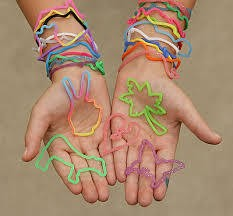
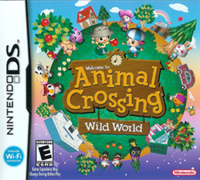
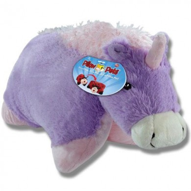
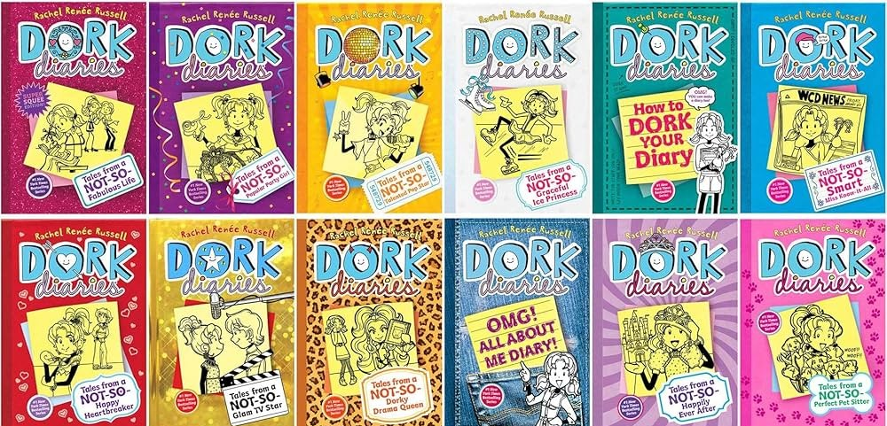
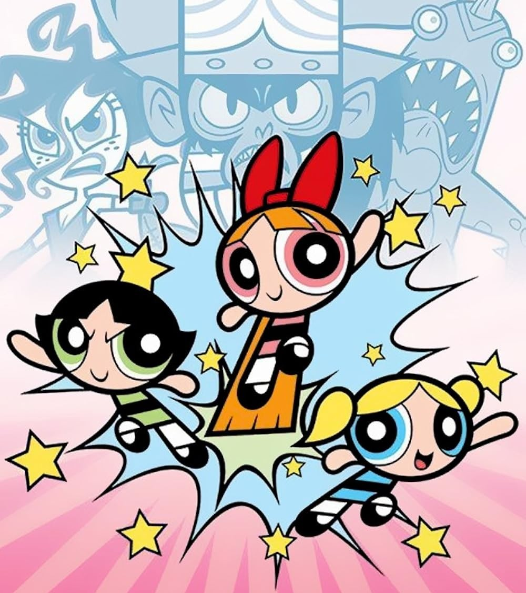
The aesthetic merges early 2000s web culture, glittery textures, Windows XP interfaces, and tacky collages, with the physical objects and media that defined the generation's childhood.
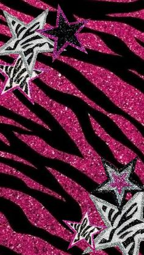
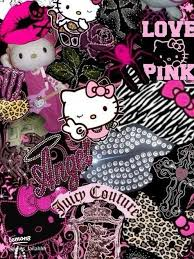
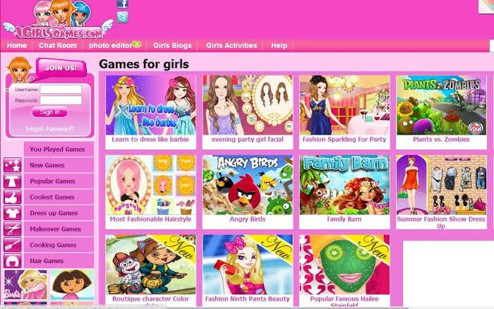
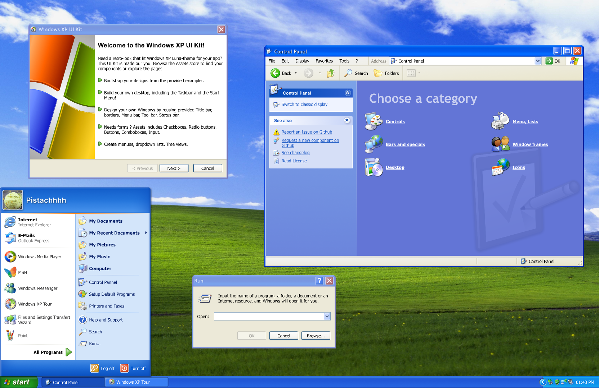
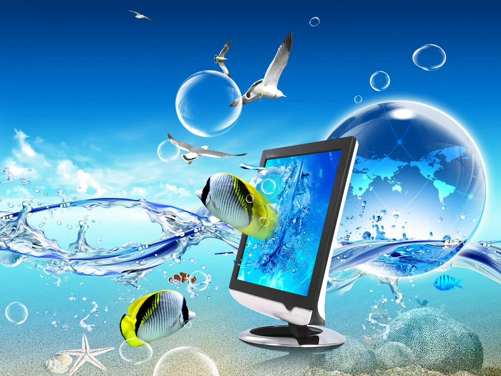
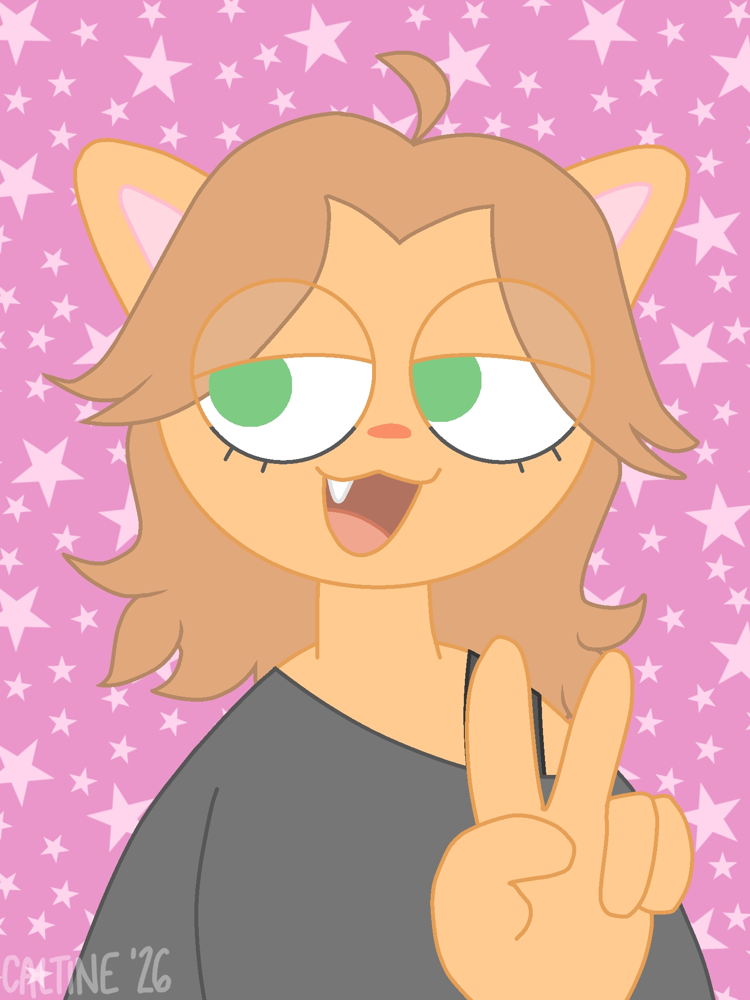
Kat is the orange tabby cat persona guiding users through the website. She is a reimagining of my longtime personal character which was previously an edgy demon persona reflecting darker themes and subjects.
This project represents a conscious creative pivot: warm, playful, and entirely personal. Kat wears a baggy shirt with an off-shoulder collar, wide leg pants, and Vans. However, in this project, a younger Kat is seen wearing a t-shirt, straight jeans, and twinkle toes; a design that reflects the y2k fashion era being celebrated.
All illustrations of Kat were drawn digitally using ibisPaint X on her phone, freehand with a finger — something I’ve done for over eleven years of digital art practice.
Windows XP Interface: Every page uses Windows XP styled pop-up windows for dialogue and memory descriptions, grounding the experience in early 2000s desktop nostalgia. The homepage mimics a full Windows XP desktop complete with a taskbar, live clock, and glittery desktop icons.
Background GIFs: The homepage uses a glittery, pink leopard star GIF as the desktop wallpaper. All six memory-focused pages share a glittery, hot pink checkerboard GIF, creating visual consistency while the reflection page uses a softer glittery star GIF to signal an emotional shift.
iPod Music Players: Each memory page features a clickable iPod Shuffle image as the music player, with era-appropriate songs chosen to match each page's theme, from S&M by Rihanna on the Toys page to Vanilla Twilight by Owl City on the Books page.
Orange Paw Cursor: A custom orange cat paw cursor, downloaded from cursor.cc, follows the user throughout the entire site, reinforcing Kat's presence as the guide as her fur is orange.
Hidden Easter Egg: The song title on the TV & Movies page is a secret hyperlink to a Bubbles x Boomer AMV that played The Way I Are by Timbaland, the actual video that introduced the me to the song as a child.
Homepage — XP Desktop
Page 1 — Toys
Page 2 — TV & Movies
Page 3 — Music
Page 4 — Internet & Games
Page 5 — Fashion
Page 6 — Books
Reflection
"Circa 2003" is a multipage interactive narrative website that is guided by my newly created persona, Kat. For years, my persona gravitated around an edgy, demonic persona, and I want to stray away from dark themes and subjects. Kat is be an orange cat who guides the user through the y2k experience. As much as this is a creative project, I like to think that this is a transitional point in my life as well in terms of creativity and individualism. This project is a pivot to something warm, creative, and something that's entirely me.
The website invites users, particularly those who were born in the early 2000s, to revisit the small, but vivid highlights of the y2k childhood. From the world of toys, Britney Spears, The Powerpuff Girls, Animal Crossing, and more, each page of this project functions as a memory blended with appropriate songs and hand-drawn images. The design of the project is inspired by early web culture, which includes glittery, colorful, and leopard print backgrounds, playful animations, and of course physical objects that defined the y2k childhood.
What makes this project personal is its intimacy. I have never encountered a website that exhibits these features specifically dedicated to y2k nostalgia. By including my personally drawn character gifs inspired by myself, the website feels more personal rather than a history lesson. It serves as both a cultural connection and a reflection of my personal growth. Using the skills I learned in this course, I am readily able to create custom layouts, animations, multi-page navigation, and embedded media all from scratch.